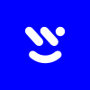

AI Custom Providers (OpenRouter) connects Odoo AI agents to OpenRouter and other compatible providers, with central model selection, image generation and audio transcription.
Choose one conversation model for all agents or assign models individually. Route images and transcription to compatible models using your own provider account.
Keep AI configuration in one place and use provider billing for requests routed through this module.
Upgrades preserve existing settings and credentials. Global routing remains disabled when no previous setting exists.
Under AI > Configuration > AI Providers, set the name, provider identifier, API URL and API key. Use Test Connection to check access.
Under AI > Configuration > Models, create a display name, model identifier and provider. OpenRouter Default Model uses the account default and cannot be deleted, archived or reassigned.
Image and transcription selectors accept any provider whose supported API matches the task. This module does not add audio or video generation.
Test Connection on an AI provider checks access and displays the result. Existing agent image-generation and chat voice controls use the configured media models.
Requires Odoo 20 AI and AI Agents (ai and ai_agentic). Provider credentials are required for custom requests. The Odoo environment needs markdown2 to display formatted AI replies.
Added OpenRouter account defaults, global routing, dedicated media models, image attachments, chat and recorded-call transcription, provider error handling, and global-mode tab visibility.
Developed by twio.tech AG | www.twio.tech